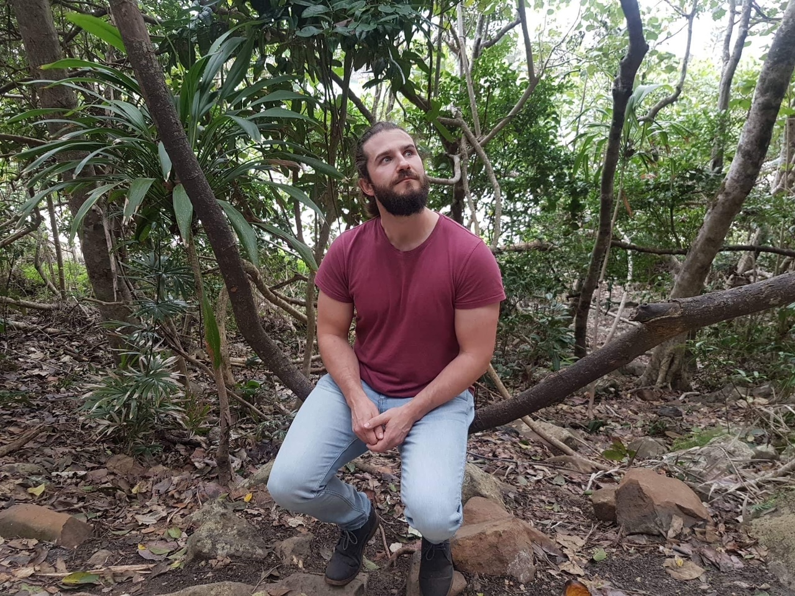
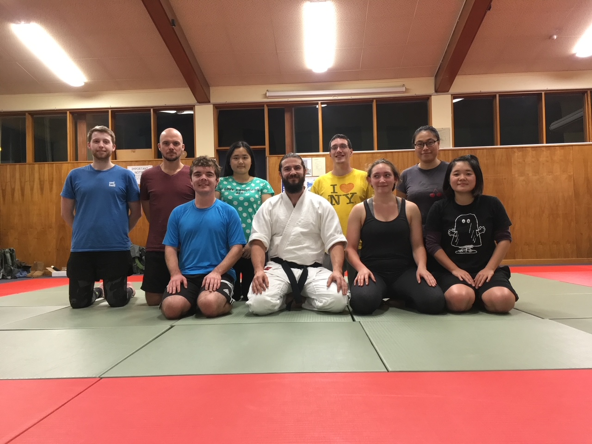
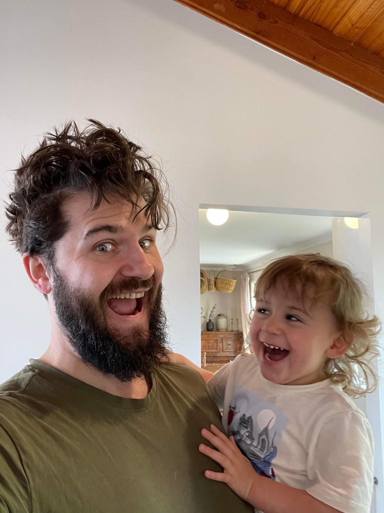

Identity & Values - Who Am I?
Early life and sense of identity
Okay, first blog post - let's do it!
I think that everybody's individual core beliefs and values are just an expression of the experiences they have been through up until this moment of their lives. Everybody has had a slightly (or very!) different upbringing, and made choices that have lead them through their own unique path and created their own unique sense of identity or self.
I was raised in the English Lake District - a very pretty area. I didn't realise it at the time, but living around that kind of scenery and having a country upbringing definitely instilled a respect for the world we live in, and a strong work-ethic. I was mucking in at the neighbours farm when I was four years old, so it has always been clear to me that to get anywhere you have to put the work in!
My parents were both well educated Cambridge graduates, and tried their best to get me to have the same passion for learning that they did. Like most kids, I thought they were full of it at the time and just wanted to do my own thing... but then in my mid-twenties I had to admit that lifelong learning was pretty fun, and developed a curiosity for just about anything and everything. I guess they managed to rub off on me after all!
My Mum worked as a software developer when I was a kid - a remote working one at that! She was living the dream before it even WAS the dream! Being a developer in the eighties was a different ball game. The internet wasn't a thing for a start, so... imagine that for a second. If you got stuck, all you had was books and telephone calls. Which you would have to disconnect your terminal to make. Some of my earliest memories are of my Mum's office - a dark room with a tiny green screen, and literally HUNDREDS of books scattered about, open at different pages - all enveloped in a thick cloud of smoke, because that's how offices were in the eighties. One day I started reading one of the books just for fun - about coding in BASIC. That year I got a BBC Microcomputer for Xmas and started coding for the first time. I was... seven I think? But that was my first taste of code. It was hard but interesting. I didn't get far - I vaguely remember making a game with a dragon that moved motionless around the screen before I gave up. It at least gave me a bit of respect for what my Mum actually DID though, and showed me how powerful programming could be if you were good at it.
Once the internet was a thing we were one of the first adopters in my area, and I started making webpages using a WYSIWYG HTML editor that our ISP provided. It was fun - I made various pages about Star Wars and Spiderman mainly - the important stuff. CSS and JS were definitely in their infancy - don't remember hearing about them until much later on. The point is - I knew I enjoyed making things and coding from an early age. Then I.... stopped. I think the PlayStation came out and that was much more fun probably. I don't remember.

Passions, Teaching, & Ethics
After that I got into Martial Arts. This was the part of my life where I started to understand the importance of seeing things through, and pursuing passions. I went to training every day. Not many other people did, but I did. I decided to study Japanese at university so I could take my understanding further. Soon I was representing my country and interpreting for visiting Japanese Instructors. After graduating I moved to Japan and taught over there. Aikido taught me dedication and commitment, and looking back I could see how far they had taken me. Hopefully the same will be true with web development!
Martial Arts helped improve my soft skills as well. Talking in front of genuinely huge groups of people (sometimes in a different language), was very nerve-wracking at first, but it became easy and enjoyable with time and practice. Understanding that teaching different kinds of people required a different tack took some getting used to as well - teaching a big burly Yorkshireman is an entirely different challenge to teaching to a young timid Japanese university student - especially if they haven't had many dealings with foreigners before.
When teaching I learned that everyone has an equal right to be taught - regardless of their training background or physical capabilities. Sometimes I'd have to make the decision to pull an entire class back to basics so everybody could be included. Sometimes more advanced students would get frustrated by this and I could tell they were ready for more, so I would hammer home how important basics practice was, or get them to teach the beginners themselves to prove they understood the concepts. More often than not, they'd discover they didn't have as great a grasp on things as they thought, so in hindsight I'm glad I stuck to my guns on inclusivity!
STRENGTHS & WEAKNESSES
I'd say my strengths are:
- Curiosity - I'm interested in pretty much everything
- Commitment - Once I decide to do something I tend to stick with it
- Social Skills - I'm pretty outgoing and friendly, and I tend to work well and get on with other people with few issues
Interestingly I'd say my curiosity is also a weakness - being interested in most things makes it very difficult to commit to a particular learning path at times. Sticking to these time boxes will be a challenge!
Another weakness is also my ability to get comfortable and not stray out of my comfort zone. After leaving Japan I ended up working in the Australian Timber industry for ten years! Sure, I enjoyed it at the time, but it wasn't where I saw myself staying. I just... got comfortable. I did however learn how to work as part of a close-knit team when in this position. The guys I was working with were typical Aussie blokes - very resistant to change. I was trying to convince them the benefits of having a website - crazy, right? When I first started, they weren't that interested in my opinion, so I stopped pushing for this pretty quickly, even when I touted increased visibilty and customers etc. As I got to know them better I started to understand that statistics and logic weren't going to sway them. They were old-fashioned guys who learned by word-of-mouth. I ended up getting one of their peers in from a local timberyard to show them his website and explain how it had helped him grow his business. This got it over the line, and I was greenlit to develop a basic website. Sometimes just having the right solution isn't enough - it has to be pitched in the right way!
Now that that job is behind me and I am well and truly out of my comfort zone - I'm happier than I've been in years! I just need to remember that wherever I find myself I should always be trying to push the boundaries and never get too comfortable with what I'm doing. There's always room for improvement, right?
CURRENT STRUGGLES & NEXT STEPS
During my time in Aus I met my lovely partner - a kiwi from Christchurch. Fast forward a few years and we have four little boys. A five year old, twin two year olds, and a baby who's just turned one. This particular adventure is undoubtedly the hardest and most ridiculous thing I've ever done. Raising four kids with no family support is hard. Like, really hard. I thought I knew what hard was until this happened. Now the things I thought were hard before do not seem hard. It's hard. The key thing I've learned from being a parent is also one of the most difficult for me - sometimes you just have to put your hand up and say "I can't do this - please help me." All throughout my life up until this point I've felt very self-sufficient. Working with other people and being social was nice, but I could always do everthing I needed to on my own if necessary. Actually HAVING to turn to other people for help at times was a completely foreign concept to me - and made me feel like a failure at first. I should be able to do everything myself, right?
Nope.
It took a while to get this one through my thick skull, and I almost killed myself these last few years trying to work multiple jobs while looking after a young family. I was constantly tired. I would lose my temper. I'd tell myself I was doing the best I could to be a good dad. Eventually my girlfriend sat me down and explained that I couldn't be a good dad if I worked and stressed myself to death, so we made the decision to relocate to Christchurch to get some family support. Letting go felt good, and now I finally have the time to spend some actual quality time with the kids, while working on a new career I will hopefully enjoy. Moral of the story? It's okay not to be okay, kids!
